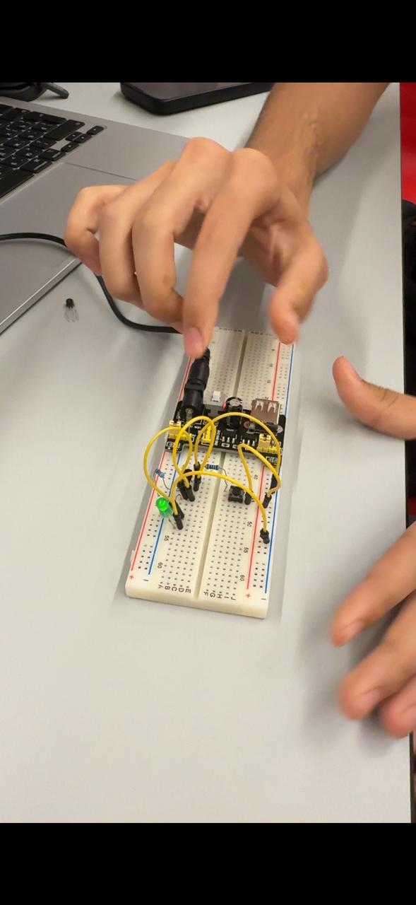
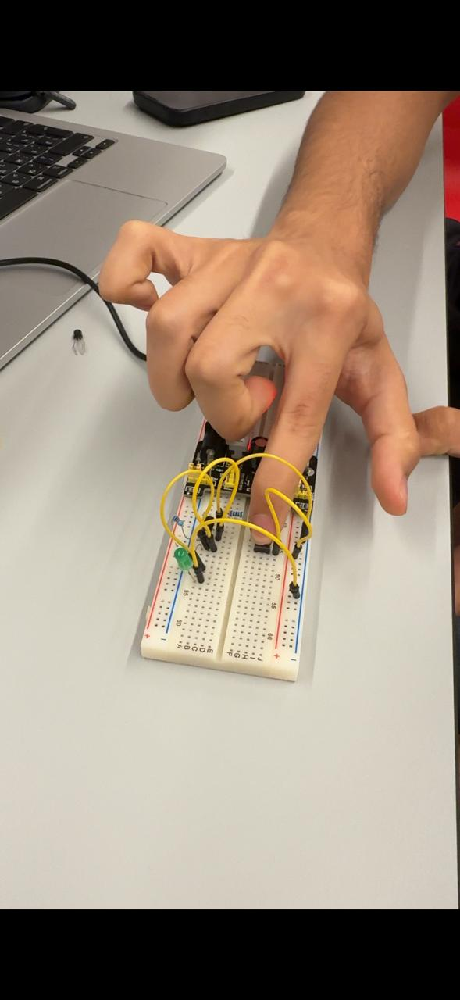
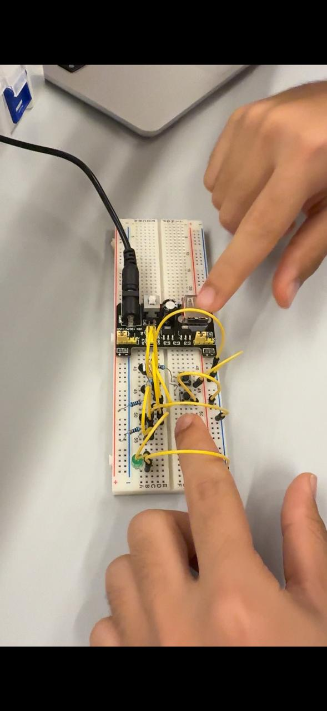
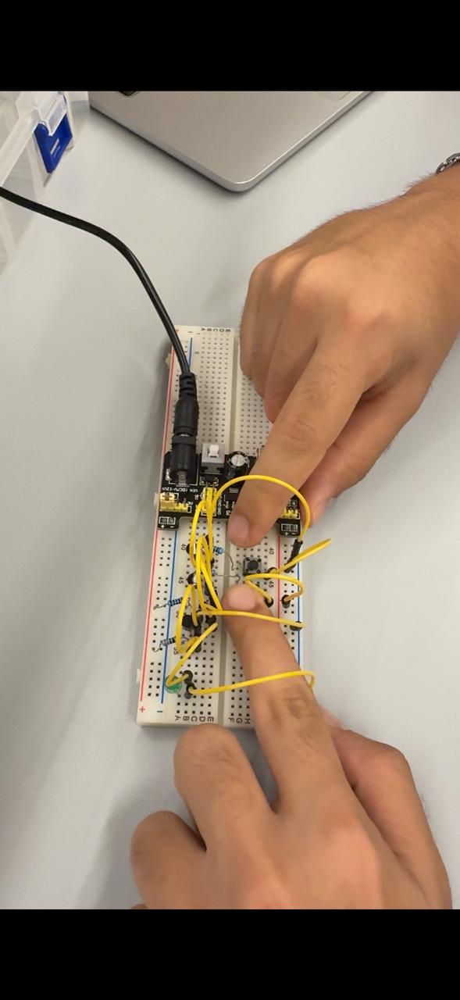
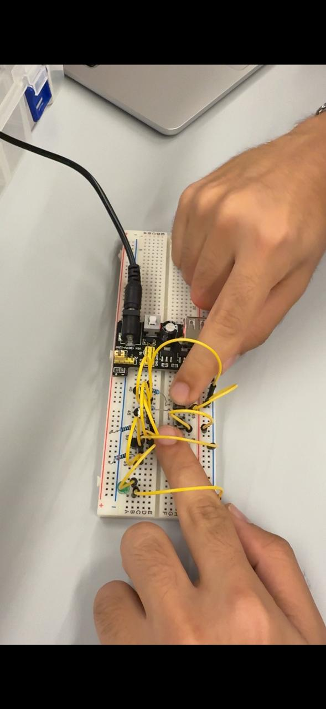
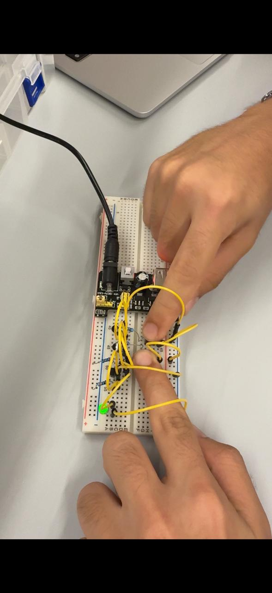
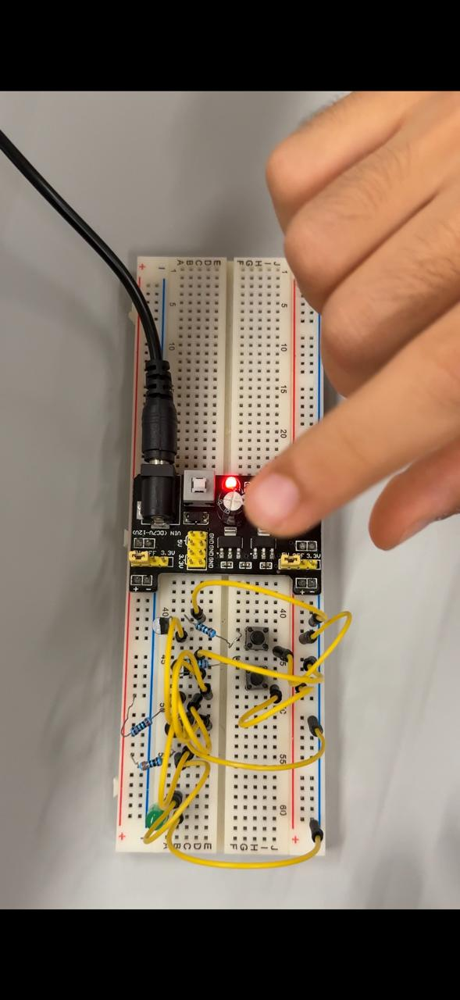
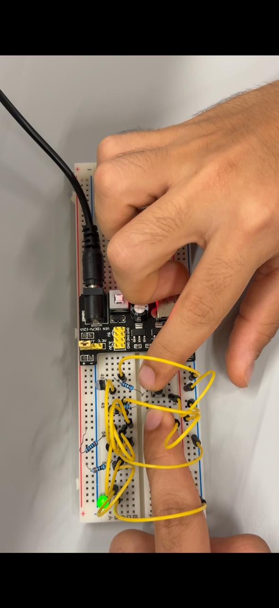
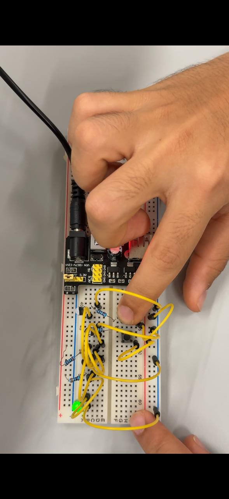
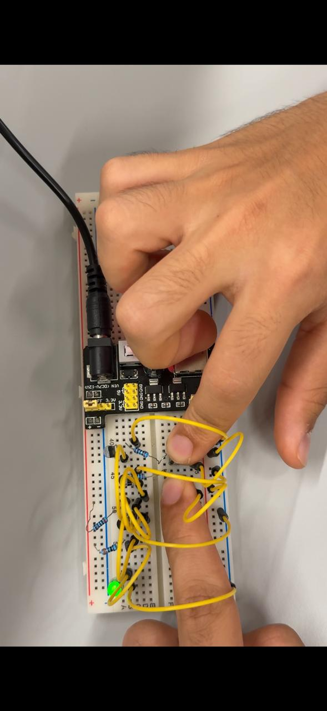

Project 1: Logic Gates Construction
Building NOT, AND, and OR Gates Using Transistors
This project was part of the SITE 1101: Principles of Information Systems course at ADA University. Together with my team, we constructed NOT, AND, and OR logic gates using real electronic components. Each circuit was built manually using transistors, resistors, LEDs, and push buttons, then tested for all input combinations according to the truth tables.
NOT Gate


AND Gate




OR Gate




Components Used
- Solderless breadboard
- PN2222 NPN transistors
- 330Ω and 2kΩ resistors
- Push buttons
- LED indicators
- 5V power module
- Jumper wires